media_muestral <- length(1000)
desvío_muestral <- length(1000)
for (i in 1:1000) {
s <- rnorm(10, 0, 1)
media_muestral[i] <- mean(s)
desvío_muestral[i] <- sd(s) / sqrt(length(s))
}
plot(media_muestral, desvío_muestral)6 Pruebas t
Volvamos atrás en el tiempo. William Sealy Gosset consiguió trabajo en la cervecería Guinness. Sí, la que hace la famosa stout irlandesa. Lo que pasó después fue más o menos así (lo estoy inventando, pero la idea general es cierta).
Guinness quería que todas sus cervezas fueran las mejores. Nada de errores, nada de birra mala. Querían mejorar el control de calidad para que, sin importar en qué parte del mundo sirvieras una Guinness, siempre saliera perfecta: 5 estrellas sobre 5, siempre.
Tenían catadores expertos. Cada vez que probaban una Guinness que no era 5 de 5, lo notaban al instante.
Pero había un gran problema. Hacían un barril de cerveza, y querían saber si cada pinta que saliera de ahí iba a ser perfecta. Así que los catadores se tomaban pinta tras pinta del barril… hasta que se acababa. Algunos barriles salían bien, otros no. Guinness tenía que arreglar eso. Pero el mayor problema era que, después del testeo, no quedaba cerveza para vender —se la habían tomado toda (recordá que esta parte me la estoy inventando para ilustrar el punto; seguro algo les quedaba para vender).
Guinness tenía un problema de población y muestreo. Querían saber si toda la población de cervezas producidas era de 5 estrellas. Pero si probaban toda la población, no les quedaba nada para vender.
Ahí entra William Sealy Gosset. Gosset resolvió el problema. Se hizo preguntas como:
¿Cuántas muestras necesito tomar para saber si toda la población es de 5 sobre 5?
¿Cuál es la menor cantidad de muestras que puedo tomar para saber eso, de forma que Guinness pueda testear menos cervezas, vender más, y acortar el tiempo de control de calidad?
Gosset resolvió esas preguntas e inventó algo llamado la prueba t de Student. Como trabajaba para Guinness, podía ser despedido si divulgaba secretos comerciales (como la prueba t). Pero igual publicó su trabajo, bajo un seudónimo (Student 1908). Se hizo llamar “Student”, y por eso el test se llama prueba t de Student. Ahora ya sabés el resto de la historia.
Y resultó ser algo muy útil. La prueba t se usa todo el tiempo. Y se usa porque sirve. En este capítulo vamos a ver cómo funciona.
Te va a sorprender saber que lo que ya vimos antes (el test de Crump, el test de aleatorización) es muy parecido a la prueba t. Así que ya venís pensando en lo necesario para entender las pruebas t. Seguramente te estás preguntando qué es eso de \(t\), qué significa. Ya vamos a contarte. Pero antes, una idea más.
6.1 Revisá tu confianza en el promedio
Ya hablamos de tomar una muestra de datos. Sabemos cómo calcular la media, la desviación estándar, y cómo ver los datos en un histograma. Todo eso nos ayuda a entender mejor nuestras muestras.
Capaz pensás que la media y la desviación estándar son cosas muy distintas, que no deberían combinarse. La media te dice dónde están la mayoría de los datos, y la desviación estándar cuánto varían. Sí, son distintas. Pero combinarlas puede darnos información útil.
Si te digo que mi media muestral es 50, y no te digo nada más, ¿cuán confiado estás de que los números están cerca de 50? ¿Te preguntás si hay mucha variabilidad, si algunos valores están lejos? Deberías preguntártelo. La media sola no dice cuánto representa al resto de los datos.
Puede ser representativa, si la desviación estándar es chica. O no, si la desviación es grande. Para confiar en la media, necesitás saber cuánta variabilidad hay.
¿Cómo combinamos media y desviación para obtener una medida de confianza?
Podemos usar un cociente:
\[\frac{\text{media}}{\text{desviación estándar}}\]
Veamos qué pasa:
\[\frac{\text{número}}{\text{mismo número}} = 1\]
\[\frac{\text{número}}{\text{número chico}} = \text{número grande}\]
\[\frac{\text{número}}{\text{número grande}} = \text{número chico}\]
Si la media es 50 y la desviación es 1:
\[\frac{50}{1} = 50\]
Si la desviación es 100:
\[\frac{50}{100} = 0.5\]
Cuando la desviación es baja, el cociente es grande: más confianza. Si la desviación es alta, el cociente es chico: menos confianza. Así que esta proporción nos da una idea de cuán confiable es la media.
En resumen: creamos una estadística descriptiva dividiendo la media por la desviación estándar. Y tenemos una forma de interpretarla. Si el resultado es grande, la media representa bien a los datos. Si es chico, no tanto. Este tipo de razón es clave en estadística: compara lo que sabemos con lo que no sabemos.
Casi todo lo que viene en este libro se basa en esta lógica. Las fórmulas siguen este esquema:
\[\text{estadístico} = \frac{\text{medida de lo que sabemos}}{\text{medida de lo que no sabemos}}\]
o también:
\[\text{estadístico} = \frac{\text{efecto}}{\text{error}}\]
Y esta es, justamente, la fórmula general dla prueba t. ¡Sorpresa!
6.2 Prueba t de una muestra: una nueva prueba t
Ahora sí, hablemos de las pruebas t. Vamos a ver tres tipos. Empezamos con la prueba t de una muestra.
Este test se usa para estimar la probabilidad de que tu muestra venga de una población específica. En particular, querés saber si la media de tu muestra podría venir de una población con cierta media.
Acá empieza lo confuso (y todavía no te dije la fórmula). En teoría, la prueba t usa parámetros conocidos de la población, como su media y su desviación. Pero en la práctica, casi nunca conocés esos valores. Así que tenés que estimarlos a partir de la muestra.
Recordá lo que vimos sobre estadística descriptiva y muestreo: la media muestral es un estimador insesgado de la media poblacional. Y la desviación muestral (la que divide por n–1) también lo es. Gosset se dio cuenta de que podía usar estas estimaciones para construir la prueba t.
Acá va la fórmula, primero en palabras:
6.2.1 Fórmulas dla prueba t de una muestra
\[\text{estadístico} = \frac{\text{efecto}}{\text{error}}\]
\[t = \frac{\text{efecto}}{\text{error}}\]
\[t = \frac{\text{diferencia de medias}}{\text{error estándar}}\]
\(t = \frac{\bar{X}-\mu}{S\_{\bar{X}}}\)
\(t = \frac{\text{Media muestral - Media poblacional}}{\text{Error estándar muestral}}\)
\(Error estándar estimado = \text{Error estándar de la muestra} = \frac{s}{\sqrt{N}}\)
donde s es la desviación estándar de la muestra.
Capaz que todo esto te hizo bizquear un poco. Tranquilo, ya lo vimos antes, cuando dividimos la media por la desviación estándar. La prueba t no es más que la media muestral dividida por el error estándar de esa media. Eso es todo.
6.2.2 ¿Qué representa t?
\(t\) nos da una medida de confianza, igual que la razón anterior en la que dividíamos la media por la desviación estándar. La única diferencia es que ahora dividimos por el error estándar de la media (que, recordá, también es una desviación estándar: la de la distribución muestral de la media).
Note
¿La t en prueba t significa algo? Aparentemente no. Gosset originalmente usó z. Y después Fisher lo llamó t, tal vez porque viene después de s, que suele usarse para la desviación estándar muestral.
\(t\) es una propiedad de los datos que recolectás. Se calcula con la media de la muestra y su error estándar (y también con la media poblacional, a la que llegamos enseguida). Por eso se dice que t es una estadística muestral: se calcula a partir de la muestra. ¿Qué valores deberíamos esperar obtener para esos t? ¿Cómo podríamos saberlo?
Empecemos con un ejemplo simple. Imaginá que tu media muestral es 5, y querés saber si viene de una población con media 5. ¿Cuál sería el valor de t? Cero: restamos 5 - 5 = 0. Como el numerador es 0, t también lo es. Así que t = 0 ocurre cuando no hay diferencia. Ahora tomás otra muestra. ¿La media será siempre 5? Probablemente no. Supongamos que da 6. ¿Qué valor tendrá t? El numerador es positivo: 6 - 5 = +1. Pero t no necesariamente será 1, eso depende del error estándar. Si es 1, entonces t será 1, porque 1/1 = 1. Si el error estándar es menor que 1, ¿qué pasa con t? Aumenta. Por ejemplo, 1 dividido por 0.5 da 2. Si el error estándar fuera 0.5, entonces t sería 2. Y con ese valor podríamos tener más confianza en que la diferencia que observamos no es casual.
¿Puede t ser menor que 1? Claro. Si el error estándar es grande, digamos 2, entonces t será más chico (1/2 = 0.5). La dirección de la diferencia entre la media muestral y la poblacional también puede hacer que t sea negativo. Si la media muestral fuera 4, entonces la diferencia es negativa, y t también lo será, porque el numerador es negativo. El denominador (el error estándar) siempre será positivo (acordate por qué: se calcula a partir de la desviación estándar de la muestra, que siempre es positiva porque usamos cuadrados al calcularla). Así que estas son algunas intuiciones sobre los valores posibles de t. Puede ser positivo o negativo, grande o chico.
Hagamos una cosa más para afinar la intuición. ¿Qué tal si generamos varias muestras, calculamos la media muestral y el error estándar de la media, y graficamos esas dos cosas entre sí? Así vamos a ver cómo varía típicamente la media con respecto al error estándar.
En la figura @fig-6muestraMSEM, tomé 1.000 muestras de tamaño $N = 10$ de una distribución normal (media = 0, desviación estándar = 1). En cada caso, calculé la media y el error estándar. Eso nos da dos estadísticas descriptivas por muestra, y podemos graficarlas como puntos en un scatterplot.
Lo que obtenemos es una nube de puntos. Podés notar que tiene una forma más o menos circular. Hay más puntos en el centro, y menos a medida que se alejan. La nube muestra el rango típico de las medias muestrales: la mayoría está entre -1 y 1. El error estándar también varía entre aproximadamente 0.2 y 0.5. Recordá que cada punto representa una muestra.
Podemos ver estos datos de otra forma. En lugar de graficar directamente las medias y errores, podemos dividir la media de cada muestra por su error estándar. La figura @fig-6thisexample muestra un histograma de esos valores.
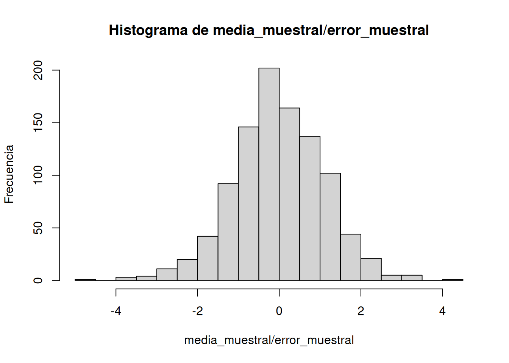
Interesante, el histograma tiene forma de campana normal. Está centrado en 0, que es el valor más común. A medida que los valores se alejan de 0, son menos frecuentes. Si recordás, nuestra fórmula para t era la media dividida por el error estándar. Eso es exactamente lo que hicimos acá. Este histograma te está mostrando una distribución t.
6.2.3 Calcular t a partir de datos
Probemos calcular un valor de t con una muestra chica. Supongamos que 10 estudiantes hicieron un test de verdadero/falso con 5 preguntas. Hay un 50% de chance de acertar cada una al azar.
Todos completan el test, corregimos, y calculamos el desempeño (porcentaje de respuestas correctas). Queremos saber si estuvieron adivinando. Si fue así, el promedio debería rondar el 50%, que sería igual a azar. Veamos la tabla @tbl-tsmall.
| estudiantes | puntajes | promedio | Diferencia_de_la_media | Desvíos_al_cuadrado |
|---|---|---|---|---|
| 1 | 50 | 61 | -11 | 121 |
| 2 | 70 | 61 | 9 | 81 |
| 3 | 60 | 61 | -1 | 1 |
| 4 | 40 | 61 | -21 | 441 |
| 5 | 80 | 61 | 19 | 361 |
| 6 | 30 | 61 | -31 | 961 |
| 7 | 90 | 61 | 29 | 841 |
| 8 | 60 | 61 | -1 | 1 |
| 9 | 70 | 61 | 9 | 81 |
| 10 | 60 | 61 | -1 | 1 |
| Sumas | 610 | 610 | 0 | 2890 |
| Medias | 61 | 61 | 0 | 289 |
| DE | 17.92 | |||
| EEM | 5.67 | |||
| t | 1.94003527336861 |
Podés ver que la columna puntajes tiene los puntajes de cada uno de los 10 estudiantes. Hicimos todo lo necesario para calcular la desviación estándar. Recordá que la desviación estándar muestral es la raíz cuadrada de la varianza muestral, o sea:
\(\text{desviación estándar} = \sqrt{\frac{\sum_{i}^{n}({x_{i}-\bar{x})^2}}{N-1}}\)
\(DE = \sqrt{\frac{2890}{10-1}} = 17.92\)
El error estándar de la media se obtiene dividiendo la desviación estándar por la raíz de N:
\(EEM = \frac{s}{\sqrt{N}} = \frac{17.92}{10} = 5.67\)
t es la diferencia entre nuestra media muestral (61) y la media poblacional (50, si asumimos azar), dividida por el error estándar:
\(t = \frac{\bar{X}-\mu}{S_{\bar{X}}} = \frac{61-50}{5.67} = 1.94\)
Y así se calcula t a mano. Es un embole. A mí ya me molestó hacerlo así. En el laboratorio vas a aprender a calcular t con software, que te lo da de una. Por ejemplo, en R solo tenés que escribir:
t.test(puntajes, mu=50)
One Sample t-test
data: puntajes
t = 1.9412, df = 9, p-value = 0.08415
alternative hypothesis: true mean is not equal to 50
95 percent confidence interval:
48.18111 73.81889
sample estimates:
mean of x
61 6.2.4 ¿Cómo se comporta t?
Si t es solo un número que podemos calcular a partir de una muestra (y lo es), ¿qué hacemos con él? ¿Cómo usamos t para inferencia estadística?
Volvamos al capítulo sobre muestreo y distribuciones. Ahí hablamos de la distribución muestral de la media. Generamos muchas muestras, calculamos la media de cada una, y armamos un histograma de esas medias. Más adelante dijimos que podíamos hacer eso con cualquier estadístico. Para cada muestra podíamos calcular la media, la desviación estándar, el error estándar, e incluso t. Podríamos generar 10.000 muestras y hacer cuatro histogramas, uno por cada estadístico. Eso fue exactamente lo que hice, y los resultados están en los cuatro paneles de la figura @fig-6sampdists. Usé un tamaño de muestra de 20, y tomé observaciones aleatorias de una distribución normal, con media = 0, y la desviación estándar = 1. Veamos las distribuciones muestrales de cada estadístico. t se calculó asumiendo que la media poblacional es 0.
all_df <- data.frame()
for (i in 1:10000) {
muestra <- rnorm(20, 0, 1)
media_muestral<- mean(muestra)
desvío_muestral <- sd(muestra)
muestra_ee <- sd(muestra) / sqrt(length(muestra))
muestra_t <- as.numeric(t.test(muestra, mu = 0)$statistic)
t_df <- data.frame(i, media_muestral, desvío_muestral, muestra_ee, muestra_t)
all_df <- rbind(all_df, t_df)
}
library(ggpubr)
a <- ggplot(all_df, aes(x = media_muestral)) +
geom_histogram(color = "white") +
theme_classic(base_size=20)
b <- ggplot(all_df, aes(x = desvío_muestral)) +
geom_histogram(color = "white") +
theme_classic(base_size=20)
c <- ggplot(all_df, aes(x = muestra_ee)) +
geom_histogram(color = "white") +
theme_classic(base_size=20)
d <- ggplot(all_df, aes(x = muestra_t)) +
geom_histogram(color = "white") +
theme_classic(base_size=20)
ggarrange(a, b, c, d,
ncol = 2, nrow = 2)`stat_bin()` using `bins = 30`. Pick better value with `binwidth`.
`stat_bin()` using `bins = 30`. Pick better value with `binwidth`.
`stat_bin()` using `bins = 30`. Pick better value with `binwidth`.
`stat_bin()` using `bins = 30`. Pick better value with `binwidth`.
Vemos cuatro distribuciones muestrales. Así es como se comportan los resúmenes estadísticos de muestras. Antes hablamos de ventanas de azar —estas son cuatro ventanas de azar, que miden distintos aspectos de una muestra. En este caso, todas las muestras provienen de la misma distribución normal. Pero por el error muestral, cada muestra es diferente. Las medias no son idénticas, las desviaciones tampoco, los errores estándar tampoco, y los valores de t tampoco. Todas varían, como muestran los histogramas. Así se comportan las muestras de tamaño 20.
Podemos ver de entrada que es poco probable obtener una media muestral de 2. Está muy fuera del rango típico. La distribución de las medias va más o menos de -0.5 a +0.5, y está centrada en 0 (¡justo la media poblacional, mirá vos!).
También es poco probable obtener desviaciones estándar entre 0.6 y 1.5; ese es el rango típico específico para la desviación estándar muestral.
Lo mismo pasa con el error estándar de la media: el rango es más chico, entre 0.1 y 0.3. Rara vez vas a encontrar una muestra con error estándar mayor a 0.3. Prácticamente nunca uno de 1 (en esta situación).
Y ahora mirá los valores de t. El rango va más o menos de -3 a +3. Los valores 3 apenas aparecen. Casi nunca vas a ver un 5 o un -5 acá.
Todas estas ventanas de azar se pueden usar como usamos las distribuciones muestrales antes (por ejemplo, en el test de Crump o el test de aleatorización), para hacer inferencias estadísticas. El proceso es el mismo para todas:
- Generar estas distribuciones
- Mirar tus estadísticos muestrales (media, SD, SEM, y t)
- Calcular la probabilidad de obtener ese valor de t o uno más extremo
- Obtener esa probabilidad
- Evaluar si tus estadísticas muestrales parecen probables o improbables
Enseguida vamos a formalizar todo esto. Por ahora, quiero que veas que esto que vas a hacer es algo que ya hiciste antes. Por ejemplo, en el test de Crump y el test de aleatorización, nos enfocamos en la distribución de diferencias de medias. Podríamos hacer lo mismo acá, pero esta vez nos vamos a centrar en la distribución de valores t. Después aplicamos las mismas reglas de decisión que usamos con las otras distribuciones.
Abajo vas a ver un gráfico que ya viste antes, pero ahora muestra una distribución de t, no de diferencias de medias. Recordá: si obtenemos un único valor t a partir de una muestra que recolectamos, podemos consultar la ventana de azar en @fig-6tdecision para ver si ese valor era esperable por azar o no.
muestra_t <- all_df$muestra_t
ggplot(all_df, aes(x = muestra_t)) +
annotate(
"rect",
xmin = min(muestra_t),
xmax = max(muestra_t),
ymin = 0,
ymax = Inf,
alpha = 0.5,
fill = "red"
) +
annotate(
"rect",
xmin = min(muestra_t),
xmax = -1.94,
ymin = 0,
ymax = Inf,
alpha = 0.7,
fill = "light grey"
) +
annotate(
"rect",
xmin = 1.94,
xmax = max(muestra_t),
ymin = 0,
ymax = Inf,
alpha = 0.7,
fill = "light grey"
) +
geom_rect(aes(
xmin = -Inf,
xmax = min(muestra_t),
ymin = 0,
ymax = Inf
),
alpha = .5,
fill = "lightgreen") +
geom_rect(aes(
xmin = max(muestra_t),
xmax = Inf,
ymin = 0,
ymax = Inf
),
alpha = .5,
fill = "lightgreen") +
geom_histogram(bins = 50, color = "white") +
theme_classic() +
geom_vline(xintercept = min(muestra_t)) +
geom_vline(xintercept = max(muestra_t)) +
geom_vline(xintercept = -1.94) +
geom_vline(xintercept = 1.94) +
xlim(-8, 8) +
geom_label(data = data.frame(x = 0, y = 250, label = "AZAR"), aes(x = x, y = y, label = label)) +
geom_label(data = data.frame(x = -7, y = 250, label = "NO\nAZAR"),
aes(x = x, y = y, label = label)) +
geom_label(data = data.frame(x = 7, y = 250, label = "NO\nAZAR"),
aes(x = x, y = y, label = label)) +
geom_label(data = data.frame(x = -4, y = 250,
label = "?"),
aes(x = x, y = y, label = label)) +
xlab("media de muestra_t")Warning: Removed 2 rows containing missing values or values outside the scale range
(`geom_bar()`).
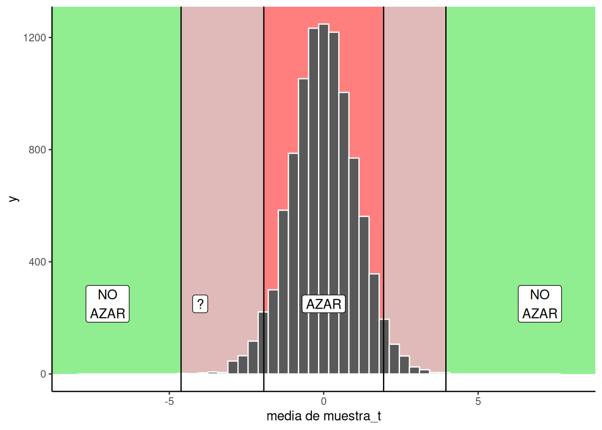
6.2.5 Tomando una decisión
Volvamos a nuestro ejemplo del test de verdadero/falso. Ahora podemos tomar una decisión sobre qué pasó ahí. Encontramos una diferencia de medias de 11. El valor de t fue 1.9411765. La probabilidad de obtener ese valor de t o uno más extremo es \(p\) = 0.0841503.
Estábamos probando si nuestra media muestral de 61 podría venir de una distribución normal con media = 50. El test t nos dice que obtener ese t, o uno más grande, pasaría con probabilidad \(p\) = 0.0841503. En otras palabras, el azar puede lograrlo, pero no muy seguido. En criollo: todos los estudiantes podrían haber estado adivinando… pero no es muy probable que haya sido solo eso.
La próxima prueba-t se llama prueba t de muestras pareadas. Y, spoiler: vamos a descubrir que en realidad es un prueba t de una muestra disfrazado (¡¿QUÉ?!). Sí. Si no entendiste el de una muestra, seguí leyendo.
6.3 Prueba t de muestras pareadas
Para mí (Crump), muchos análisis terminan siendo una prueba t de muestras pareadas. Simplemente porque muchas de las cosas que hago se reducen a eso.
Soy psicólogo cognitivo. Hago investigación sobre cómo la gente recuerda, presta atención y aprende habilidades. Hay muchos psicólogos como yo que hacen cosas parecidas. Hacemos experimentos muy similares. Son lo que se llama diseños de medidas repetidas. Se llaman así porque medimos cómo una persona hace algo más de una vez. Repetimos la medición. Por ejemplo, puedo medir cómo alguien realiza una tarea en la condición A, y luego ver cómo esa misma persona la hace en la condición B. Y veo que hace cosas distintas. Estoy midiendo repetidamente a la misma persona en ambas condiciones. Lo que me interesa es si la manipulación experimental cambia algo en cómo la persona realiza la tarea.
6.3.1 Mehr, Song y Spelke (2016)
Vamos a introducir la prueba t de muestras pareadas con un ejemplo real, de un estudio real. Mehr, Song, and Spelke (2016) investigaron si cantarles canciones a los bebés los ayuda a ser más sensibles a las señales sociales. Por ejemplo, los bebés tienen que aprender a dirigir su atención hacia las personas como parte de aprender a interactuar socialmente. Tal vez cantarle a un bebé ayuda con ese proceso. Cuando un bebé escucha una canción familiar, puede empezar a prestar más atención a la persona que la canta, incluso después de que termina. Esa persona puede volverse más importante para el bebé en términos sociales. Vas a aprender más sobre este estudio en el laboratorio de esta semana. Este ejemplo te prepara para las actividades de ese laboratorio. Acá va un resumen breve de lo que hicieron.
Primero, los padres fueron entrenados para cantarle una canción a sus bebés. Luego de varios días de cantarles esa canción, los padres fueron al laboratorio con sus bebés. En la primera sesión, se sentaron con sus hijos en las rodillas, de forma que los bebés pudieran mirar dos videos. En cada video aparecían dos personas nuevas que el bebé nunca había visto. Cada una de esas personas (los cantantes) les cantaba una canción al bebé. Uno de los cantantes cantaba la canción familiar, que el bebé ya conocía por sus padres. El otro cantaba una canción no familiar, que el bebé nunca había oído.
Hubo dos fases de medición importantes: la fase de línea base (baseline) y la fase de prueba (test).
La fase de línea base ocurrió antes de que los bebés vieran y oyeran a los cantantes. Durante esta fase, los bebés miraban un video con ambos cantantes en simultáneo. Los investigadores registraban qué proporción del tiempo el bebé miraba a cada uno. Esta fase servía para ver si los bebés ya tenían una preferencia por alguno de los dos (antes de escucharlos cantar).
La fase de prueba fue después de que los bebés vieron y oyeron a cada cantante. En esta fase, los bebés veían videos mudos de los mismos cantantes. Se medía la proporción de tiempo que pasaban mirando a cada uno. La pregunta era: ¿los bebés mirarían más tiempo al cantante que había cantado la canción familiar, en comparación con el otro?
Hay más de una forma de describir el diseño del estudio, pero lo vamos a presentar así: fue un diseño de medidas repetidas, con una variable independiente (la manipulación), llamada fase de visualización: línea base vs. prueba. Hubo una variable dependiente (la medición), que fue la proporción de tiempo mirando al cantante que había cantado la canción familiar. Fue un diseño de medidas repetidas porque esa proporción se midió dos veces: una en la línea base (antes de que los bebés oyeran a los cantantes), y otra en la prueba (después de que los oyeran).
La pregunta clave era si los bebés cambiarían su tiempo de mirada, mirando más tiempo al cantante de la canción familiar durante la fase de prueba que en la línea base. Es una pregunta sobre un cambio dentro de cada bebé. En general, los posibles resultados eran:
Sin cambio: la diferencia entre el tiempo de mirada al cantante de la canción familiar durante línea base y prueba es cero.
Cambio positivo: los bebés miran más tiempo al cantante de la canción familiar durante la fase de prueba (después de haberlo visto y escuchado), comparado con la fase de línea base (antes de oírlos). Esto da una diferencia positiva si usamos la fórmula: Tiempo de mirada en prueba − Tiempo de mirada en línea base (al cantante de la canción familiar).
Cambio negativo: los bebés miran más tiempo al cantante de la canción no familiar durante la fase de prueba (después de haberlos escuchado), en comparación con la línea base (antes de oírlos). Esto da una diferencia negativa con la misma fórmula: Tiempo de mirada en prueba − Tiempo de mirada en línea base (al cantante de la canción familiar).
6.3.2 Los datos
Veamos los datos de los primeros 5 bebés del estudio. Esto nos va a ayudar a entender mejor algunas propiedades de los datos antes de analizarlos. Vamos a ver que los datos están estructurados de forma que podemos aprovechar con una prueba t de muestras pareadas. (Ojo: miramos solo los primeros 5 bebés para mostrar cómo funcionan los cálculos. El resultado final dla prueba t cambia si usamos todos los datos del estudio).
Acá está la tabla con los datos:
| infant | Línea_de_base | Test |
|---|---|---|
| 1 | 0.44 | 0.60 |
| 2 | 0.41 | 0.68 |
| 3 | 0.75 | 0.72 |
| 4 | 0.44 | 0.28 |
| 5 | 0.47 | 0.50 |
La tabla muestra la proporción de tiempo mirando al cantante de la canción familiar durante las fases de línea base y prueba. Fijate que hay cinco bebés (del 1 al 5). Cada uno fue medido dos veces: una en la fase de línea base y otra en la de prueba. Como dijimos antes, esto es un diseño de medidas repetidas, porque se mide a cada bebé más de una vez (en este caso, dos). También se le llama diseño de muestras pareadas. ¿Por qué? Porque cada participante aporta un par de mediciones (una por cada condición del diseño).
Buenísimo, entonces… ¿qué nos interesa en realidad? Queremos saber si el tiempo medio de mirada al cantante de la canción familiar en la fase de prueba es mayor que en la fase de línea base. Estamos comparando las dos medias muestrales entre sí, buscando una diferencia. Ya sabemos que esas diferencias pueden surgir por azar, simplemente por el hecho de que tomamos dos muestras, y que las muestras naturalmente pueden diferir. Así que lo que queremos saber es si es probable o improbable que la diferencia observada se deba al azar.
En otras palabras, nos interesa mirar los valores de diferencia entre línea base y prueba para cada bebé. La pregunta es: ¿para cada bebé, aumentó su proporción de mirada al cantante de la canción familiar en la fase de prueba comparado con la fase de línea base?
6.3.3 Los puntajes de diferencia
Agreguemos los puntajes de diferencia a la tabla para que sea más fácil ver de qué hablamos. El primer paso es decidir cómo vamos a calcular la diferencia. Hay dos opciones:
- Puntaje en fase de prueba − Puntaje en fase de línea base
- Puntaje en fase de línea base − Puntaje en fase de prueba
Vamos a usar la primera fórmula. ¿Por qué? Porque da diferencias positivas cuando el puntaje de la prueba es mayor que el de línea base. Eso hace que los puntajes positivos tengan sentido en este estudio: indican que el bebé miró más al cantante de la canción familiar después de escucharlo que antes.
paired_sample_df <- cbind(paired_sample_df,
diferencias = (paired_sample_df$Test -
paired_sample_df$Línea_de_base))
knitr::kable(paired_sample_df)| infant | Línea_de_base | Test | diferencias |
|---|---|---|---|
| 1 | 0.44 | 0.60 | 0.16 |
| 2 | 0.41 | 0.68 | 0.27 |
| 3 | 0.75 | 0.72 | -0.03 |
| 4 | 0.44 | 0.28 | -0.16 |
| 5 | 0.47 | 0.50 | 0.03 |
Listo, ahora tenemos los puntajes de diferencia. Lo primero que podemos hacer es mirar esos valores y preguntar: ¿cuántos bebés mostraron el efecto que nos interesa? Específicamente: ¿cuántos tuvieron una diferencia positiva?
Podemos ver que tres de los cinco bebés mostraron un puntaje positivo (miraron más al cantante de la canción familiar en la fase de prueba que en la de línea base), y dos bebés mostraron lo contrario (miraron más al cantante de la canción familiar durante la línea base que durante la prueba).
6.3.4 La diferencia media
Como venimos diciendo, el efecto de interés en este estudio es la diferencia media entre la proporción de tiempo de mirada en línea base y en prueba. Podemos calcularla como la media de los puntajes de diferencia. Vamos a hacerlo. De paso, para divertirnos, también vamos a calcular la media de los puntajes en línea base, los de prueba y los de diferencia.
paired_sample_df <- paired_sample_df %>%
rbind(c("Sums",colSums(paired_sample_df[1:5,2:4]))) %>%
rbind(c("Means",colMeans(paired_sample_df[1:5,2:4])))
knitr::kable(paired_sample_df)| infant | Línea_de_base | Test | diferencias |
|---|---|---|---|
| 1 | 0.44 | 0.6 | 0.16 |
| 2 | 0.41 | 0.68 | 0.27 |
| 3 | 0.75 | 0.72 | -0.03 |
| 4 | 0.44 | 0.28 | -0.16 |
| 5 | 0.47 | 0.5 | 0.03 |
| Sums | 2.51 | 2.78 | 0.27 |
| Means | 0.502 | 0.556 | 0.054 |
Podemos ver que hubo una diferencia media positiva de 0.054 entre las fases de prueba y línea base. ¿Podemos apurarnos a concluir que los bebés se sienten más atraídos socialmente hacia personas que les cantaron una canción familiar? Espero que no, al menos no con una muestra tan pequeña. Primero, la diferencia en proporción de tiempo mirando no es muy grande, y por supuesto reconocemos que esa diferencia podría haberse producido por azar.
Vamos a evaluar más formalmente si esta diferencia pudo haber sido causada por el azar usando una prueba t de muestras pareadas. Pero antes, calculemos de nuevo t y pensemos qué nos dice t además de lo que ya nos dice la media de los puntajes de diferencia.
6.3.5 Calcular t
Bueno, ¿cómo se calcula t para una prueba t de muestras pareadas? ¡Sorpresa! Usamos la misma fórmula dla prueba t de una muestra que ya aprendiste. Específicamente, usamos la fórmula dla prueba t de una muestra aplicada a los puntajes de diferencia. Tenemos una sola muestra de puntajes de diferencia (están en una sola columna), así que podemos usar la prueba t de una muestra. Lo que nos interesa es saber si la media de esos puntajes de diferencia podría provenir de una distribución con media 0. Esa distribución especial se llama la distribución nula (null distribution): es la distribución de la ausencia de diferencias. Claro que esta distribución puede generar diferencias pequeñas por error muestral, pero esas diferencias no están causadas por ninguna manipulación experimental, sino por el simple azar del muestreo.
Vamos a calcular t en un momento. Pero antes, pensemos de nuevo: ¿por qué queremos calcular t? ¿Por qué no quedarnos solo con la diferencia media?
Recordá: toda la idea detrás de t es que nos da una indicación de cuánta confianza deberíamos tener en nuestra media. El valor de t se obtiene al dividir una medida de la media (el numerador) por una medida de variación (el error estándar, en el denominador). t será chico cuando la diferencia media es chica, o cuando la variación es grande. O sea, valores bajos de t nos dicen que no deberíamos estar muy seguros sobre esa estimación de diferencia. En cambio, cuando la diferencia media es grande y/o la variación es pequeña, obtenemos un valor alto de t. Eso nos da más confianza en la estimación.
Vamos a calcular t para los puntajes de diferencia. Usamos las mismas fórmulas de antes:
| infant | Linea_de_base | Test | diferencias | diferencias_a_la_media | diferencias_al_cuadrado |
|---|---|---|---|---|---|
| 1 | 0.44 | 0.6 | 0.16 | 0.106 | 0.011236 |
| 2 | 0.41 | 0.68 | 0.27 | 0.216 | 0.046656 |
| 3 | 0.75 | 0.72 | -0.03 | -0.084 | 0.00705600000000001 |
| 4 | 0.44 | 0.28 | -0.16 | -0.214 | 0.045796 |
| 5 | 0.47 | 0.5 | 0.03 | -0.024 | 0.000575999999999999 |
| Sumas | 2.51 | 2.78 | 0.27 | 0 | 0.11132 |
| Medias | 0.502 | 0.556 | 0.054 | 0 | 0.022264 |
| sd | 0.167 | ||||
| SEM | 0.075 | ||||
| t | 0.72 |
Si hiciéramos este test usando R, obtendríamos casi los mismos números (hay un poco de redondeo en la tabla).
t.test(diferencias, mu = 0)
One Sample t-test
data: diferencias
t = 0.72381, df = 4, p-value = 0.5092
alternative hypothesis: true mean is not equal to 0
95 percent confidence interval:
-0.1531384 0.2611384
sample estimates:
mean of x
0.054 Acá va una forma rápida de reportar los resultados dla prueba t: t(4) = .72, p = .509.
¿Qué nos dice todo esto? Hay algunos detalles que todavía no abordamos mucho. Por ejemplo, ese 4 representa los grados de libertad, de eso hablaremos más adelante. Lo importante por ahora es que el valor de t empiece a tener un poco más de sentido. Obtuvimos un valor t bastante chico: 0.72. ¿Qué podemos decir a partir de eso? Primero, es positivo, así que sabemos que la diferencia media también lo fue. El signo del valor t siempre es el mismo que el de la diferencia media (en nuestro caso fue +0.054).
También vemos que el valor p fue .509. Ya vimos valores p antes. Esto nos dice que obtener un valor de t igual o mayor al observado ocurre en aproximadamente un 50.9% de los casos… Bueno, en realidad significa algo más que eso. Y para entenderlo, tenemos que hablar de los conceptos de test bilateral (two-tailed) y unilateral (one-tailed).
6.3.6 Interpretar valores t
Recordá lo que estamos haciendo: estamos evaluando si nuestros datos muestrales podrían haber salido de una distribución específica. La distribución nula, de ausencia de diferencias. Esta es la distribución de valores t que ocurren con muestras de tamaño 5, con diferencia media igual a 0, y error estándar de la media de .075 (ese es el SEM que calculamos a partir de nuestra muestra).
Podemos ver cómo luce esta distribución nula en @fig-6tnull:
range <- seq(-3, 3, .1)
null_distribution <- dt(range, 4, log = FALSE)
plot_df <- data.frame(range, null_distribution)
ggplot(plot_df, aes(x = range, y = null_distribution)) +
geom_line() +
xlab("valores t") +
ylab("Probabilidad") +
theme(axis.text.y = element_blank(), axis.ticks = element_blank()) +
scale_x_continuous(breaks = seq(-3, 3, .5)) +
geom_label(data = data.frame(x = -.7, y = .1, label = "50% \n (-)"),
aes(x = x, y = y, label = label)) +
geom_label(data = data.frame(x = .7, y = .1, label = '50% \n (+)'), aes(x = x, y = y, label = label)) +
geom_vline(xintercept = 0) +
theme_classic(base_size = 20)La distribución t de arriba muestra los valores que puede tomar t solo por azar, cuando medimos diferencias de medias en pares de muestras de tamaño 5 (como en nuestro caso). El valor más probable de t es cero, lo cual tiene sentido, porque estamos viendo la distribución de la ausencia de diferencias, que debería tener su mayor densidad en 0. Pero, a veces, por error muestral, pueden aparecer valores de t mayores o menores que cero. Notá que la distribución es simétrica: los valores t de la distribución nula son positivos la mitad de las veces, y negativos la otra mitad. Eso es justo lo que esperaríamos por azar.
Entonces, ¿qué queremos saber cuando obtenemos un valor t específico de nuestra muestra? Queremos saber qué tan probable es que ocurra ese valor t solo por azar. Esta es una pregunta con sutilezas. Por ejemplo, un valor específico de t no tiene una única probabilidad de ocurrir. Cuando hablamos de probabilidades, nos referimos a rangos de valores.
Usamos la letra p para referirnos a la probabilidad de que ocurran ciertos valores de t. Veamos algunos ejemplos:
¿Cuál es la probabilidad de que t sea igual a cero, o distinto de cero? La respuesta es p = 1, o 100%. Siempre vamos a obtener un valor de t que es cero o no cero… Bueno, a menos que no podamos calcularlo (por ejemplo, si la desviación estándar no está definida), pero si lo podemos calcular, será positivo, negativo o cero.
¿Cuál es la probabilidad de que t sea mayor o igual a 0? La respuesta es p = .5, o 50%. El 50% de los valores t son mayores o iguales a 0.
¿Y de que t sea menor o igual a 0? También p = .5. La mitad de los valores están en esa región.
Podemos responder estas preguntas solo mirando la distribución t y dividiéndola en dos regiones iguales: la mitad izquierda (50% de los valores t) y la mitad derecha (los otros 50%).
¿Y si queremos un enfoque más fino? Por ejemplo, dividir en regiones del 10%. ¿Qué valores de t ocurren solo el 10% del tiempo? Podemos marcar líneas que dividan la distribución en regiones así. Notá que los valores extremos (más grandes o más chicos) son menos probables, entonces los intervalos más alejados del centro tienen que ser más anchos para contener el mismo 10%. Así se ve la figura @fig-6percentregions:
range <- seq(-3, 3, .1)
null_distribution <- dt(range, 4, log = FALSE)
plot_df <- data.frame(range, null_distribution)
t_ps <- qt(seq(.1, .9, .1), 4)
ggplot(plot_df, aes(x = range, y = null_distribution)) +
geom_line() +
xlab("valores t") +
ylab("Probabilidad") +
geom_vline(xintercept = t_ps) +
theme_classic(base_size = 15) +
theme(axis.text.y = element_blank(), axis.ticks = element_blank()) +
scale_x_continuous(breaks = round(t_ps, digits = 1)) +
geom_label(data = data.frame(x = -2.5, y = .2, label = "10%"), aes(x = x, y = y, label = label)) +
geom_label(data = data.frame(x = -1.3, y = .2, label = "10%"), aes(x = x, y = y, label = label)) +
geom_label(data = data.frame(x = 2.5, y = .2, label = "10%"), aes(x = x, y = y, label = label)) +
geom_label(data = data.frame(x = 1.3, y = .2, label = "10%"), aes(x = x, y = y, label = label))
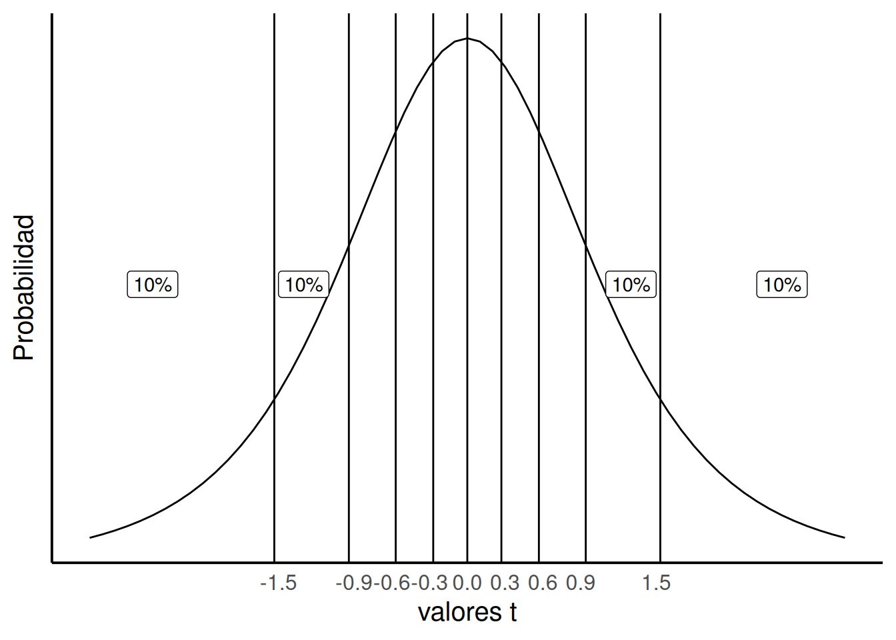
Considerá las probabilidades (p) de t para los distintos rangos:
- t ≤ -1.5 → p = 10%
- -1.5 ≥ t ≤ -0.9 → p = 10%
- -0.9 ≥ t ≤ -0.6 → p = 10%
- t ≥ 1.5 → p = 10%
Fijate que en todos los casos la probabilidad es del 10%. Los valores t ocurren en esos rangos con un 10% de probabilidad.
6.3.7 Obtener valores p para valores t
Capaz te estás preguntando de dónde saqué algunos de estos valores. Por ejemplo, ¿cómo sé que el 10% de los valores t en esta distribución nula son aproximadamente 1.5 o mayores? La respuesta es: se lo pedí a R. En la mayoría de los libros de estadística, te dirían: hay una tabla al final del libro donde podés buscar estos valores… Este libro no tiene esa tabla. Podríamos hacer una para vos. Y tal vez lo hagamos. Pero todavía no…
Entonces, ¿de dónde salen esos valores y cómo podés saberlos? La respuesta complicada es que no vamos a explicar las matemáticas detrás de cómo se obtienen estos valores, porque:
- Algunos autores de este libro admiten que no entienden bien esas matemáticas;
- Nos desviaría mucho del foco del libro;
- Vas a aprender cómo obtener estos valores en el laboratorio usando software;
- También vas a aprender cómo obtenerlos sin fórmulas, solo haciendo simulaciones;
- Podés hacerlo en R, en Excel, o usando esta calculadora online.
En resumen: podés encontrar los valores t y sus p asociados usando software. Pero el software no te explica qué significan esos valores. Eso es lo que estamos haciendo acá. Además, vas a ver que el software te pide algunos datos más: los grados de libertad del test, y si el test es unilateral o bilateral. Todavía no explicamos eso. Vamos a hacerlo ahora.
Ojo: vamos a explicar los grados de libertad al final. Primero, vamos con el test unilateral.
6.3.8 Test unilateral (one-tailed)
Un test unilateral (one-tailed test) también se llama a veces test direccional. Se le dice así porque el investigador puede tener una hipótesis en mente que sugiere que la diferencia entre medias va a tener una dirección específica: o bien una diferencia positiva, o bien una negativa.
Típicamente, el investigador establece un criterio alfa (alpha criterion). Este criterio es como una línea en la arena para tomar decisiones. A menudo se fija en $p = .05$. ¿Qué significa eso? La figura @fig-6critT muestra la distribución t con ese criterio alfa:
range <- seq(-3, 3, .1)
null_distribution <- dt(range, 4, log = FALSE)
plot_df <- data.frame(range, null_distribution)
t_ps <- qt(seq(.1, .9, .1), 4)
ggplot(plot_df, aes(x = range, y = null_distribution)) +
geom_line() +
xlab("valores t") +
ylab("Probabilidad") +
geom_vline(xintercept = qt(.95, 4, lower.tail = TRUE)) +
ggtitle("t crítico para test unilateral") +
theme_classic(base_size = 10) +
theme(axis.text.y = element_blank(), axis.ticks = element_blank()) +
annotate(
"rect",
xmin = qt(.95, 4, lower.tail = TRUE),
xmax = 3,
ymin = 0,
ymax = Inf,
alpha = 0.5,
fill = "green"
) +
geom_label(data = data.frame(x = 2.5, y = .2, label = "5%"), aes(x = x, y = y, label = label)) +
geom_label(data = data.frame(
x = qt(.95, 4, lower.tail = TRUE),
y = .3,
label = "t crítico"
),
aes(x = x, y = y, label = label)) +
geom_label(data = data.frame(
x = qt(.95, 4, lower.tail = TRUE),
y = .25,
label = round(qt(.95, 4, lower.tail = TRUE), digits = 2)
),
aes(x = x, y = y, label = label))
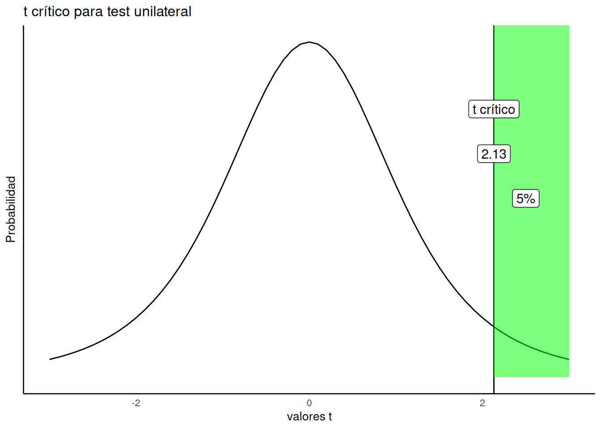
La figura muestra que los valores t de +2.13 o más ocurren el 5% de las veces. Como la distribución t es simétrica, también sabemos que valores de –2.13 o menos ocurren el 5% de las veces. Ambas afirmaciones son ciertas bajo la distribución nula (sin diferencias). Esto significa que, cuando realmente no hay diferencias, un investigador puede esperar encontrar un valor t de 2.13 o mayor en el 5% de los casos.
Recapitulemos y conectemos algunos conceptos:
Criterio alfa: el criterio que define el investigador para decidir si cree que la diferencia se debe o no al azar. En este caso, es \(p = .05\).
t crítico: el valor t asociado al criterio alfa. Para un test unilateral, es el valor tal que el 5% de todos los t están en ese valor o más. En nuestro ejemplo, t crítico = 2.13. El 5% de los valores t (con 4 grados de libertad) son iguales o mayores a 2.13.
t observado: el valor t que calculaste a partir de tu muestra. En el ejemplo de los bebés, fue t(4) = 0.72.
Valor p: el valor p es la probabilidad de obtener el valor t observado o uno mayor. En nuestro ejemplo anterior, el valor p para t(4) = 0.72 fue p = .509. SIN EMBARGO, ese valor p no fue calculado para un test direccional (unilateral)… (hablamos más sobre qué significa ese .509 en la siguiente sección).
La figura @fig-6tonedirection muestra cómo se vería el valor p para t(4) = 0.72 en un test unilateral:
range <- seq(-3, 3, .1)
null_distribution <- dt(range, 4, log = FALSE)
plot_df <- data.frame(range, null_distribution)
t_ps <- qt(seq(.1, .9, .1), 4)
ggplot(plot_df, aes(x = range, y = null_distribution)) +
geom_line() +
xlab("valores t") +
ylab("Probabilidad") +
geom_vline(xintercept = .72) +
geom_vline(xintercept = qt(.95, 4, lower.tail = TRUE)) +
ggtitle("Valor t y región p para test unilateral") +
theme_classic(base_size = 10) +
theme(axis.text.y = element_blank(), axis.ticks = element_blank()) +
annotate(
"rect",
xmin = .72,
xmax = 3,
ymin = 0,
ymax = Inf,
alpha = 0.5,
fill = "grey"
) +
annotate(
"rect",
xmin = qt(.95, 4, lower.tail = TRUE),
xmax = 3,
ymin = 0,
ymax = .25,
alpha = 0.5,
fill = "green"
) +
geom_label(data = data.frame(x = 2.5, y = .2, label = "5%"), aes(x = x, y = y, label = label)) +
geom_label(data = data.frame(
x = qt(.95, 4, lower.tail = TRUE),
y = .3,
label = "t crítico"
), aes(x = x, y = y, label = label)) +
geom_label(data = data.frame(
x = qt(.95, 4, lower.tail = TRUE),
y = .25,
label = round(qt(.95, 4, lower.tail = TRUE), digits = 2)
), aes(x = x, y = y, label = label)) +
geom_label(data = data.frame(x = .72, y = .1, label = "t observado"),
aes(x = x, y = y, label = label)) +
geom_label(data = data.frame(x = .72, y = .05, label = ".72, p="),
aes(x = x, y = y, label = label)) +
geom_label(data = data.frame(
x = 1.5,
y = .05,
label = round(pt(.72, 4, lower.tail = FALSE), digits = 3)
), aes(x = x, y = y, label = label))
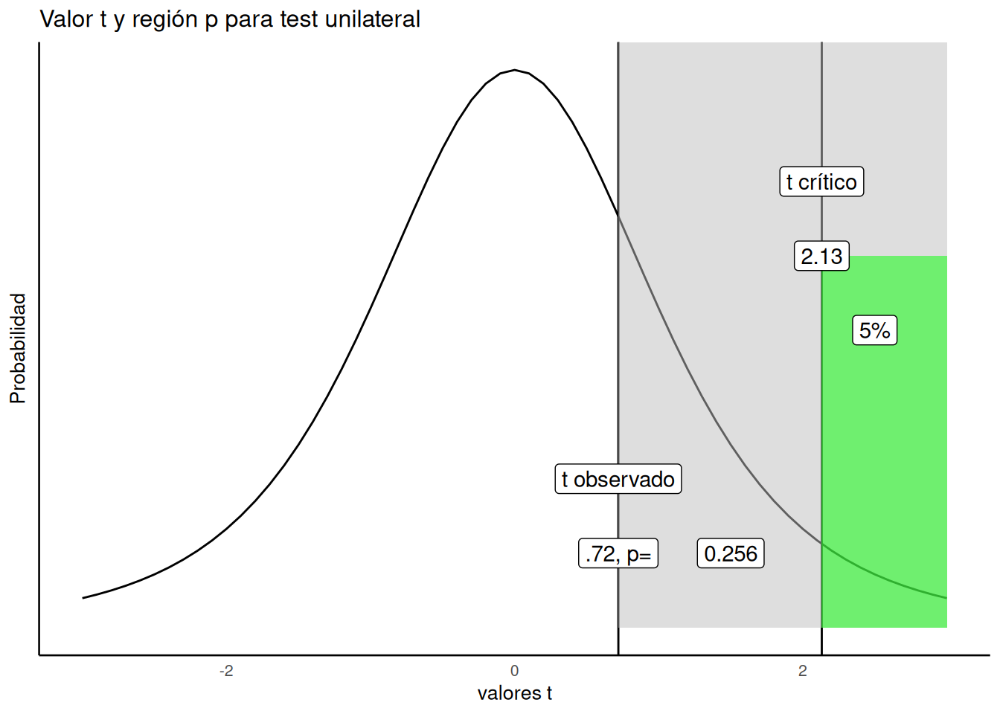
Vamos paso a paso. Marcamos en el gráfico el valor t observado (0.72). Sombreamos de gris toda la región a su derecha. Esa región gris representa un 25.6% de todos los valores t. En otras palabras, el 25.6% de los valores t son mayores o iguales a 0.72. Es decir, por azar, se puede obtener un valor de t igual o mayor a 0.72 en más de una de cada cuatro veces.
Y de hecho, eso fue lo que encontramos: un t de 0.72. Sabiendo que un valor así o mayor ocurre el 25.6% del tiempo por azar, ¿estarías confiado en que la diferencia media no se debe al azar? Probablemente no, ya que el azar puede producir ese valor bastante seguido.
range <- seq(-4, 4, .1)
null_distribution <- dt(range, 4, log = FALSE)
plot_df <- data.frame(range, null_distribution)
t_ps <- qt(seq(.1, .9, .1), 4)
ggplot(plot_df, aes(x = range, y = null_distribution)) +
geom_line() +
xlab("valores t") +
ylab("Probabilidad") +
geom_vline(xintercept = qt(.975, 4, lower.tail = TRUE)) +
geom_vline(xintercept = qt(.025, 4, lower.tail = TRUE)) +
ggtitle("Valores t críticos para test bilateral") +
theme_classic(base_size = 10) +
theme(axis.text.y = element_blank(), axis.ticks = element_blank()) +
annotate(
"rect",
xmin = qt(.975, 4, lower.tail = TRUE),
xmax = 4,
ymin = 0,
ymax = Inf,
alpha = 0.5,
fill = "green"
) +
geom_label(data = data.frame(x = 3.5, y = .2, label = "2.5%"), aes(x = x, y = y, label = label)) +
geom_label(data = data.frame(
x = qt(.975, 4, lower.tail = TRUE),
y = .3,
label = "t crítico"
), aes(x = x, y = y, label = label)) +
geom_label(data = data.frame(
x = qt(.975, 4, lower.tail = TRUE),
y = .25,
label = round(qt(.975, 4, lower.tail = TRUE), digits = 2)
), aes(x = x, y = y, label = label)) +
annotate(
"rect",
xmin = -4,
xmax = qt(.025, 4, lower.tail = TRUE),
ymin = 0,
ymax = Inf,
alpha = 0.5,
fill = "green"
) +
geom_label(data = data.frame(x = -3.5, y = .2, label = "2.5%"), aes(x = x, y = y, label = label)) +
geom_label(data = data.frame(
x = qt(.025, 4, lower.tail = TRUE),
y = .3,
label = "t crítico"
), aes(x = x, y = y, label = label)) +
geom_label(data = data.frame(
x = qt(.025, 4, lower.tail = TRUE),
y = .25,
label = round(qt(.025, 4, lower.tail = TRUE), digits = 2)
), aes(x = x, y = y, label = label))¿Qué estamos viendo acá? Una distribución de ausencia de diferencias (la nula, que es la que estamos considerando) puede producir valores de t mayores o iguales a 2.78 el 2.5% del tiempo, y menores o iguales a -2.78 también el 2.5% del tiempo. En total, eso da un 5%. Podemos decir que ts mayores que ±2.78 ocurren el 5% de las veces.
Por eso, el valor crítico de t para un test bilateral es ±2.78. Como podés ver, el test bilateral no toma en cuenta la dirección del efecto. Justamente por eso el valor crítico de t es más alto en un test bilateral que en uno unilateral. Esperamos que ahora veas por qué se llama test de dos colas: hay dos colas de la distribución, a la izquierda y a la derecha, ambas sombreadas en verde.
6.3.9 ¿Test unilateral o bilateral?
Ahora que sabés que existen los dos tipos —test unilateral y test bilateral—, ¿cuál deberías usar? Hay cierta sabiduría convencional sobre esto… pero también hay debate. Al final, lo importante es que puedas justificar tu elección y por qué es adecuada para tus datos. Esa es la respuesta real.
La respuesta convencional es que usás un test unilateral cuando tenés una teoría o hipótesis que hace una predicción direccional (la teoría predice que la diferencia será positiva o negativa). Del mismo modo, usás un test bilateral cuando estás buscando cualquier diferencia, sin una predicción direccional (la teoría solo predice que habrá una diferencia, sin decir si será positiva o negativa).
También parece que las personas eligen entre test unilaterales o bilaterales según cuán arriesgados son como investigadores. Si siempre usaras tests unilaterales, los valores t críticos para tu criterio alfa serían más bajos que los de un test bilateral. A largo plazo, cometerías más errores tipo I, porque el umbral para detectar un efecto es más bajo en un test unilateral que en uno bilateral.
Recordá: los errores tipo I ocurren cuando rechazás la idea de que la diferencia se deba al azar. Muchas veces no sabés que cometiste este error. Ocurre cuando el error muestral fue en realidad la causa de la diferencia, pero el investigador descarta esa posibilidad y concluye que su manipulación fue la causa.
De forma similar, si siempre usás tests bilaterales, incluso cuando tenés una predicción direccional, vas a cometer menos errores tipo I a largo plazo, porque el t crítico es más alto. Es bastante común que los investigadores usen un test bilateral más conservador, incluso cuando hacen predicciones direccionales basadas en teoría.
En la práctica, los investigadores tienden a adoptar un estándar de reporte común en su disciplina. Si esa práctica está justificada o no, puede ser una cuestión abierta. Lo importante para cualquier investigador (o estudiante que aprende estadística) es poder justificar su elección del tipo de test.
6.3.10 Grados de libertad
Antes de cerrar con las pruebas t de muestras pareadas, tenemos que hablar de los grados de libertad.
Tenemos la impresión de que los estudiantes no entienden muy bien qué son los grados de libertad. Si estás leyendo este libro, capaz todavía te estás preguntando qué significa eso, ya que no lo explicamos hasta ahora.
Para la prueba t, hay una fórmula para los grados de libertad. Para las pruebas t de una muestra y de muestras pareadas, la fórmula es:
\(\text{Grados de libertad} = \text{df} = n - 1\)
Donde n es el número de muestras del test.
En nuestro ejemplo con la prueba t apareado, había 5 bebés. Entonces:
\(df = 5 - 1 = 4\)
Bueno, eso es una fórmula. Pero, ¿a quién le importan los grados de libertad? ¿Qué significa ese número? ¿Y por qué lo reportamos cuando presentamos una prueba t?
Seguro notaste el número entre paréntesis, por ejemplo: t(4) = .72. Ese 4 es el df, o grados de libertad.
Los grados de libertad son tanto un concepto como una corrección. El concepto es que, si estás estimando alguna propiedad de los datos y usás esa estimación, eso impone ciertas restricciones sobre tus datos.
Por ejemplo, considerá los números: 1, 2, 3. La media de estos números es 2. Ahora imaginá que te digo que la media de tres números es 2. Entonces, ¿cuántos de esos tres números tienen libertad? Suena como una pregunta rara, ¿no? Lo que queremos decir es: ¿cuántos de esos tres números pueden ser cualquier número libremente? Los primeros dos números pueden ser cualquier cosa. Pero una vez que fijás esos dos, el tercer número ya no tiene libertad: tiene que ser un número específico para que el promedio dé 2. Es decir, los dos primeros tienen libertad, el tercero no.
Para ilustrarlo: elijamos dos números cualquiera —por ejemplo, 51 y -3. Usé mi libertad para elegir esos dos. Ahora, si nuestros tres números son 51, -3 y x, y queremos que la media sea 2, solo hay una solución: x tiene que ser -42. De otro modo, el promedio no sería 2.
Esta es una forma de entender los grados de libertad. En este ejemplo, hay 3 números y n–1 = 2 grados de libertad, porque 2 pueden ser libres, pero el tercero queda determinado.
En estadística, los grados de libertad se usan mucho, especialmente cuando una estimación depende de otra estimación. Por ejemplo: cuando calculamos la desviación estándar muestral, primero calculamos la media muestral, ¿no? Al estimar la media, estamos fijando un aspecto de la muestra. Entonces, cuando calculamos la desviación estándar, usamos n–1 en lugar de n. Ahí aparece otra vez ese famoso n–1.
6.3.10.1 Simulación del efecto de los grados de libertad sobre la distribución t
Hay al menos dos formas de pensar los grados de libertad para una prueba t. Por un lado, si querés usar fórmulas matemáticas para calcular aspectos de la distribución t, necesitás los grados de libertad como parámetro de entrada. (Si querés ver las fórmulas, bajá en la página de Wikipedia dla prueba t hasta la parte de funciones de densidad de probabilidad o de distribución acumulada. A nosotros eso nos parece bastante intimidante, y quizás por eso los grados de libertad no se entienden bien.)
Pero si queremos simular la distribución t, ahí se ve más fácil cómo influyen los grados de libertad en su forma. Recordá: t es una estadística muestral, se calcula a partir de la muestra. Así que podríamos simular el proceso de calcular t en muchas muestras distintas, y luego graficar el histograma de esos valores para ver cómo se ve la distribución t.
ts <- c(rt(10000, 4), rt(10000, 100))
dfs <- as.factor(rep(c(4, 100), each = 10000))
t_df <- data.frame(dfs, ts)
t_df <- t_df[abs(t_df$ts) < 5, ]
ggplot(t_df, aes(x = ts, group = dfs, color = dfs)) +
geom_histogram() +
theme_classic() +
facet_wrap(~ dfs) +
theme_classic(base_size = 15)`stat_bin()` using `bins = 30`. Pick better value with `binwidth`.
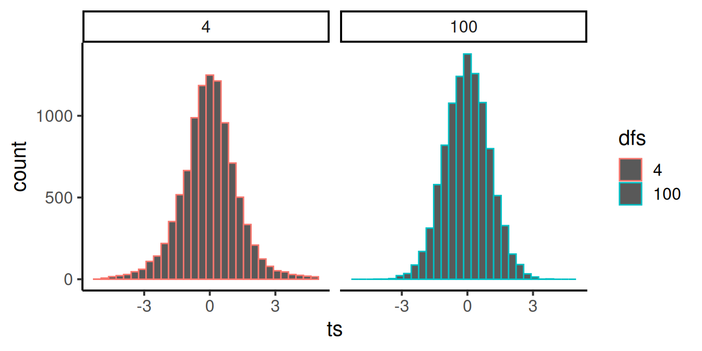
En la figura @fig-6dft, fijate que la distribución roja para $df = 4$ es un poco más baja y más ancha que la distribución azul verdosa para $df = 100$. A medida que aumentan los grados de libertad, la distribución t se vuelve más alta (en el centro) y más angosta en el rango. Se vuelve más picuda. ¿Adivinás por qué?
Recordá: estamos estimando una estadística muestral, y los grados de libertad son solo un número que representa cuántos sujetos hay (menos uno). Y ya sabemos que, al aumentar n, nuestras estadísticas muestrales se vuelven mejores estimaciones (con menos varianza) de los parámetros poblacionales. Entonces, t se vuelve una mejor estimación de su “valor verdadero” a medida que crece el tamaño muestral, lo que produce una distribución de t más angosta.
Existe una distribución t ligeramente distinta para cada grado de libertad, y las regiones críticas asociadas al 5% de los valores extremos cambian cada vez. Por eso reportamos los grados de libertad en cada prueba t: definen la distribución de valores t para el tamaño muestral que usamos.
¿Por qué usamos n–1 y no n? Bueno, calculamos t usando la desviación estándar muestral para estimar el error estándar de la media, y esa estimación usa n–1 en el denominador. Por eso, la distribución t se construye asumiendo n–1.
Con eso, ya tenés suficiente sobre grados de libertad…
6.4 La prueba t de muestras pareadas contraataca
Capaz te estás preguntando si alguna vez vamos a terminar de hablar sobre la prueba t de muestras pareadas… ¿¡por qué hay una segunda vuelta!? Tranquilo, esto es breve. Solo vamos a:
Recordarte qué estábamos haciendo con el estudio con bebés.
Hacer una prueba t de muestras pareadas usando todos los datos del estudio y discutir los resultados.
Recordá que nos preguntábamos si los bebés mirarían más tiempo al cantante de la canción familiar durante la fase de prueba, comparado con la línea base. Ya te mostramos los datos de 5 bebés, y caminamos paso a paso por los cálculos dla prueba t. A modo de repaso, se veía así:
| infant | Baseline | Test | diferencias | diferencias_a_la_media | Squared_diferencias |
|---|---|---|---|---|---|
| 1 | 0.44 | 0.6 | 0.16 | 0.106 | 0.011236 |
| 2 | 0.41 | 0.68 | 0.27 | 0.216 | 0.046656 |
| 3 | 0.75 | 0.72 | -0.03 | -0.084 | 0.00705600000000001 |
| 4 | 0.44 | 0.28 | -0.16 | -0.214 | 0.045796 |
| 5 | 0.47 | 0.5 | 0.03 | -0.024 | 0.000575999999999999 |
| Sumas | 2.51 | 2.78 | 0.27 | 0 | 0.11132 |
| Medias | 0.502 | 0.556 | 0.054 | 0 | 0.022264 |
| de | 0.167 | ||||
| EEM | 0.075 | ||||
| t | 0.72 |
One Sample t-test
data: round(diferencias, digits = 2)
t = 0.72381, df = 4, p-value = 0.5092
alternative hypothesis: true mean is not equal to 0
95 percent confidence interval:
-0.1531384 0.2611384
sample estimates:
mean of x
0.054 Volvamos a escribir el resultado una vez más: la diferencia media fue 0.054, t(4) = .72, p = .509. Ahora también podemos confirmar que el valor p se obtuvo de un test bilateral. Entonces, ¿qué significa todo esto?
Podemos decir que un valor t con valor absoluto de .72 o más ocurre el 50.9% del tiempo. Más precisamente: la distribución de ausencia de diferencias (la nula) produce un valor t de ese tamaño o mayor el 50.9% de las veces. En otras palabras: el azar por sí solo podría haber producido perfectamente el valor t de nuestra muestra, y la diferencia media de 0.054 que observamos podría deberse simplemente al azar.
Ahora metamos todos los datos dla prueba t y corramos el análisis con los 32 bebés del estudio:
paired_sample_df <- data.frame(infant = 1:32,
Baseline = round(experiment_one$Baseline_Proportion_Gaze_to_Singer[1:32], digits = 2),
Test = round(experiment_one$Test_Proportion_Gaze_to_Singer[1:32], digits = 2))
diferencias <- paired_sample_df$Test - paired_sample_df$Baseline
t.test(diferencias, mu = 0)
One Sample t-test
data: diferencias
t = 2.4388, df = 31, p-value = 0.02066
alternative hypothesis: true mean is not equal to 0
95 percent confidence interval:
0.01192088 0.13370412
sample estimates:
mean of x
0.0728125 Ahora obtenemos una respuesta muy distinta. Podríamos resumir los resultados diciendo que la diferencia media fue 0.073, t(31) = 2.44, p = 0.020. ¿Cuántos bebés hubo en total? Bueno, los grados de libertad fueron 31, así que debió haber 32 bebés en el estudio.
Ahora vemos un valor p mucho más bajo. Este también fue un test bilateral, así que observar un valor t de 2.4 o más (en valor absoluto) ocurre solo el 2% del tiempo. En otras palabras, la distribución de ausencia de diferencias rara vez produce un valor t como el que observamos. Por lo tanto, es poco probable que la diferencia media observada de 0.073 se deba al azar (podría deberse al azar, sí, pero es muy poco probable).
Como resultado, podemos tener cierta confianza en concluir que ver y escuchar a una persona desconocida cantar una canción familiar lleva al bebé a prestar más atención a esa persona, y eso podría beneficiar su aprendizaje social.
6.5 Prueba t de muestras independientes: ¿el regreso dla prueba t?
Si venís siguiendo las referencias a Star Wars, esta sería la última película de la trilogía original… la prueba t de muestras independientes. Es básicamente la misma historia de antes, pero con un giro. Recordá que hay distintos tipos de t-tests para distintos diseños experimentales. Cuando tu diseño es de grupos independientes (between-subjects), usás una prueba t de muestras independientes.
Los diseños entre sujetos implican personas diferentes en cada condición experimental. Si hay dos condiciones y 10 personas por condición, entonces hay 20 personas en total. Y no hay puntajes apareados, porque cada persona se mide una sola vez. No hay medidas repetidas. Como no hay medidas repetidas, no tiene sentido calcular diferencias entre condiciones para cada sujeto. Los puntajes no están emparejados de forma significativa, así que no tiene sentido restarlos. Entonces, ¿qué hacemos?
La lógica dla prueba t de muestras independientes es la misma que en las otras pruebas t. Calculamos la media de cada grupo, luego la diferencia. Esa diferencia va al numerador de la fórmula del t. Después estimamos la variación para el denominador. Dividimos la diferencia de medias por esa estimación, y obtenemos t. Es como antes. La única complicación es: ¿qué va en el denominador? ¿Cómo estimamos la varianza? Estaría bueno si pudiéramos hacer algo directo, como esto (en un experimento con dos grupos, A y B):
\(t = \frac{\bar{A} - \bar{B}}{\left(\frac{SEM_A + SEM_B}{2}\right)}\)
En lenguaje simple, esto sería:
- Calculás la diferencia de medias y la ponés arriba;
- Calculás el error estándar de la media (SEM) para cada grupo;
- Promediás esos SEMs para obtener una sola estimación, combinando ambas muestras.
Eso estaría bueno, pero lamentablemente no es la mejor forma de hacerlo. Tomar el promedio de los errores estándar genera un estimador sesgado de la variación en la distribución nula (la de ausencia de diferencias).
Tomar el promedio de los errores estándar generaría un estimador sesgado de la variación bajo la hipótesis nula (ausencia de diferencias). No vamos a entrar en los detalles matemáticos acá, pero en vez de esa fórmula, podemos usar otra que nos da una estimación insesgada del error estándar combinado de la media muestral. Nuestra nueva y mejorada fórmula del t se ve así:
\(t = \frac{\bar{X}_A - \bar{X}_B}{s_p \cdot \sqrt{\frac{1}{n_A} + \frac{1}{n_B}}}\)
Y $s_p$, que es la desviación estándar combinada de las muestras, se define así (notá que las s en la fórmula son varianzas):
\(s_p = \sqrt{\frac{(n_A - 1)s_A^2 + (n_B - 1)s_B^2}{n_A + n_B - 2}}\)
Créeme: es mucha más fórmula de la que quería tipear. ¿Hacemos un ejemplo de prueba t de muestras independientes a mano, para ver cómo se hacen los cálculos? Dale… pero lo vamos a hacer de una forma ligeramente distinta a la que esperás. Voy a mostrarte los pasos usando R.
Inventé unos puntajes ficticios para los grupos A y B. Luego seguí todos los pasos de la fórmula, pero hice que R haga cada uno de los cálculos. Esto te muestra los pasos necesarios siguiendo el código. Al final imprimo los valores dla prueba t que calculé “a mano”, y luego el valor dla prueba t que da la función t.test() de R. Deberías obtener el mismo valor de t si te animás a calcularlo a mano.
## A mano, usando código en R
a <- c(1,2,3,4,5)
b <- c(3,5,4,7,9)
mean_difference <- mean(a) - mean(b) # diferencia de medias
variance_a <- var(a) # varianza para A
variance_b <- var(b) # varianza para B
# Parte superior e inferior de la fórmula de sp
sp_numerator <- (4 * variance_a + 4 * variance_b)
sp_denominator <- 5 + 5 - 2
sp <- sqrt(sp_numerator / sp_denominator) # calcular sp
# calcular t según la fórmula
t <- mean_difference / (sp * sqrt((1/5) + (1/5)))
t # mostrar resultado[1] -2.017991# usando la función de R
t.test(a, b, paired = FALSE, var.equal = TRUE)
Two Sample t-test
data: a and b
t = -2.018, df = 8, p-value = 0.0783
alternative hypothesis: true difference in means is not equal to 0
95 percent confidence interval:
-5.5710785 0.3710785
sample estimates:
mean of x mean of y
3.0 5.6 6.5.1 Simular una prueba t de una muestra
Acá están los pasos que podrías seguir para simular datos para una prueba t de una muestra:
Hacés algunas suposiciones sobre cómo podría ser tu muestra (que estás planeando recolectar). Por ejemplo, podrías planear recolectar datos de 30 personas. Los puntajes podrían venir de una distribución normal (media = 50, sd = 10).
Simulás números desde esa distribución y luego hacés una prueba t sobre esos datos simulados. Guardás las estadísticas que te interesan (como los t y p) y después observás cómo se comportan.
Hagámoslo un par de veces. Primero, vamos a simular muestras con N = 30, tomadas de una distribución normal (media = 50, sd = 25). Vamos a hacer una simulación con 1000 repeticiones. En cada repetición, comparamos la media muestral con una media poblacional de 50. En promedio, no debería haber diferencia. La figura @fig-6nullt es la distribución nula que estamos simulando.
# pasos para crear datos ficticios desde una distribución
# y hacer pruebas t sobre los datos simulados
guarda_ps <- length(1000)
guarda_ts <- length(1000)
for (i in 1:1000) {
mi_muestra <- rnorm(n = 30, mean = 50, sd = 25)
t_test <- t.test(mi_muestra, mu = 50)
guarda_ps[i] <- t_test$p.value
guarda_ts[i] <- t_test$statistic
}# histogramas de t y p para las 1000 simulaciones
hist(guarda_ts)
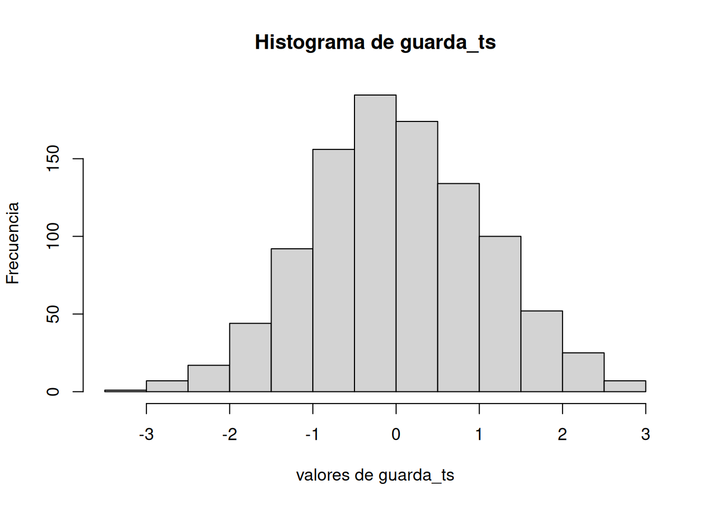
hist(guarda_ps)
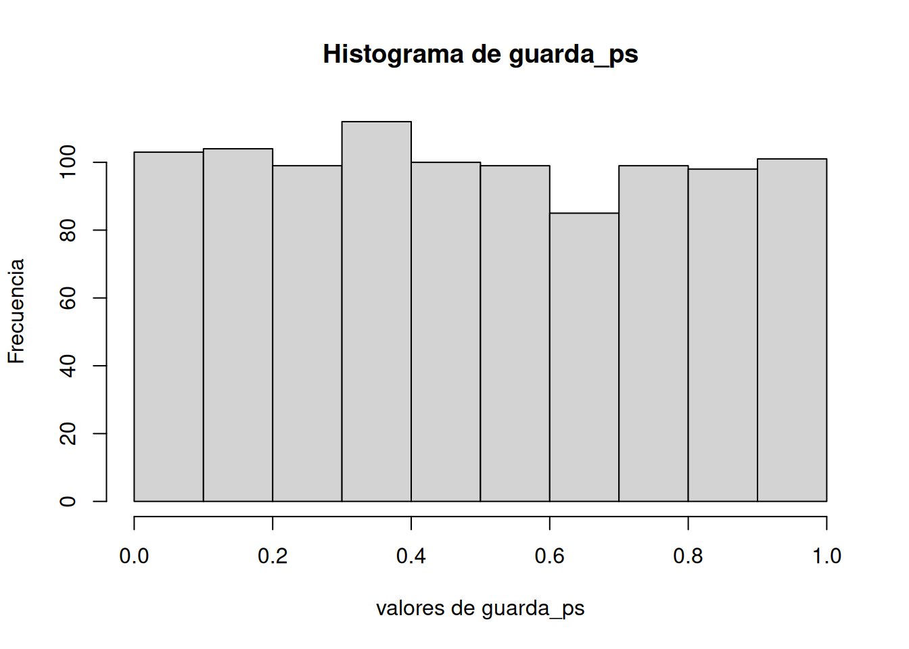
Buenísimo. Vemos una distribución t, que se parece a una t como debe ser. Y también vemos la distribución de valores p. Esto nos muestra qué tan seguido obtenemos valores t de distintos tamaños.
Capaz te llame la atención que la distribución de p es plana bajo la nula (que es lo que estamos simulando). Esto significa que tenés la misma probabilidad de obtener un valor p entre 0 y 0.05 que de obtener uno entre 0.90 y 0.95. Esos rangos tienen un 5% de ancho, así que contienen la misma cantidad de valores t por definición.
Acá va otra forma de hacer la misma simulación en R, usando la función replicate en vez de un for:
t_simulados <- replicate(1000,
t.test(rnorm(30, 50, 25), mu = 50)$statistic)
hist(t_simulados)
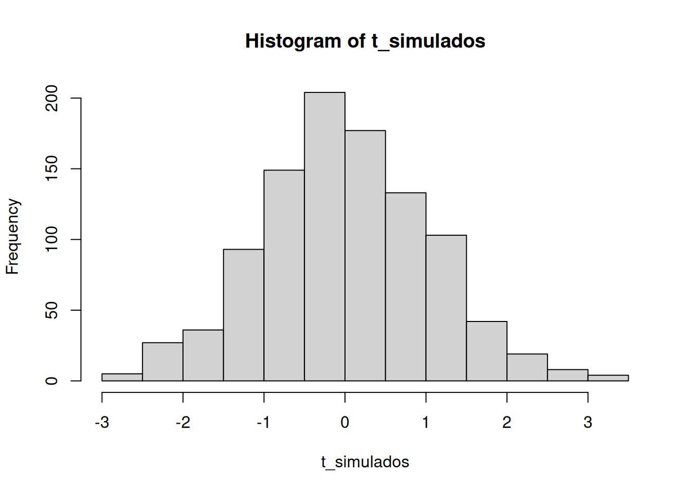
p_simulados <- replicate(1000,
t.test(rnorm(30, 50, 25), mu = 50)$p.value)
hist(p_simulados)
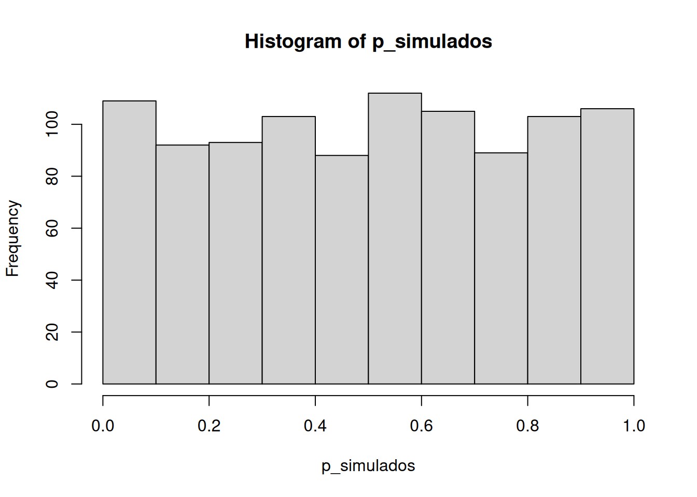
6.5.2 Simular una prueba t de muestras pareadas
El código de abajo está preparado para tomar 10 puntajes de la condición A y 10 de la condición B, ambos desde la misma distribución normal. La simulación se corre 1000 veces, y se guardan los t y p para graficarlos luego.
guarda_ps <- length(1000)
guarda_ts <- length(1000)
for (i in 1:1000) {
condicion_A <- rnorm(10,10,5)
condicion_B <- rnorm(10,10,5)
diferencias <- condicion_A - condicion_B
t_test <- t.test(diferencias, mu = 0)
guarda_ps[i] <- t_test$p.value
guarda_ts[i] <- t_test$statistic
}hist(guarda_ts)
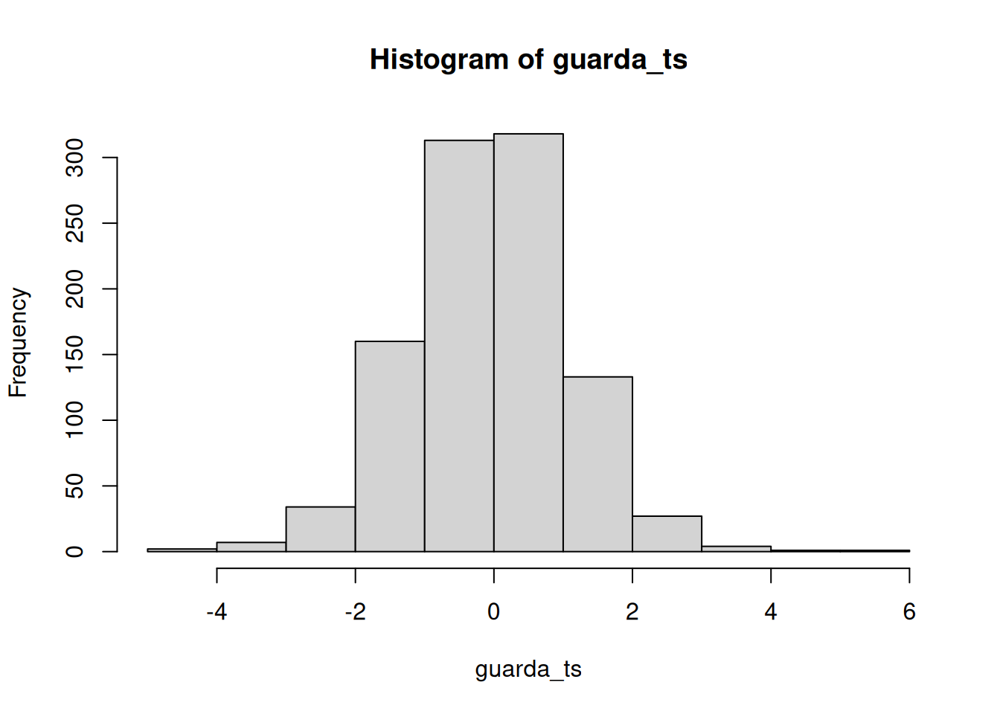
hist(guarda_ps)
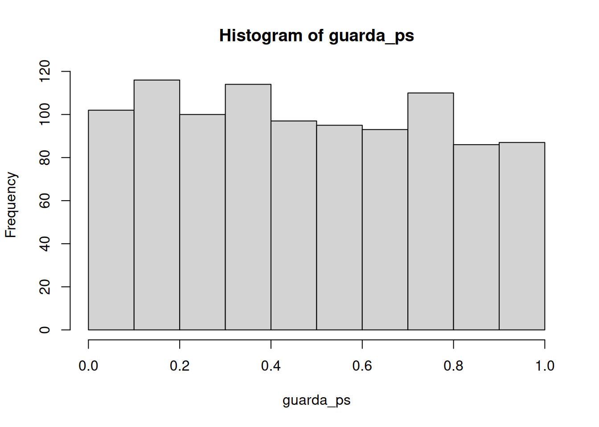
Según la simulación, cuando no hay diferencias entre las condiciones y las muestras provienen de la misma distribución, se obtienen estas dos distribuciones para t y p. Una vez más, muestran cómo se comporta la distribución nula de ausencia de diferencias.
En cualquiera de estas simulaciones, si rechazaras la hipótesis nula (que la diferencia se debe al azar), estarías cometiendo un error tipo I. Si fijás tu criterio alfa en $= .05$, podemos preguntar cuántos errores tipo I se cometieron en estas 1000 simulaciones. La respuesta es:
length(guarda_ps[guarda_ps < .05])[1] 39length(guarda_ps[guarda_ps < .05]) / 1000[1] 0.039Resulta que cometimos 39. La expectativa a largo plazo es una tasa de error tipo I del 5% (si tu alfa es .05).
¿Qué pasa si en realidad sí hay una diferencia en los datos simulados? Probemos con una condición que tenga una media mayor que la otra:
guarda_ps <- length(1000)
guarda_ts <- length(1000)
for (i in 1:1000) {
condicion_A <- rnorm(10, 10, 5)
condicion_B <- rnorm(10, 13, 5)
diferencias <- condicion_A - condicion_B
t_test <- t.test(diferencias, mu = 0)
guarda_ps[i] <- t_test$p.value
guarda_ts[i] <- t_test$statistic
}hist(guarda_ts)hist(guarda_ps)
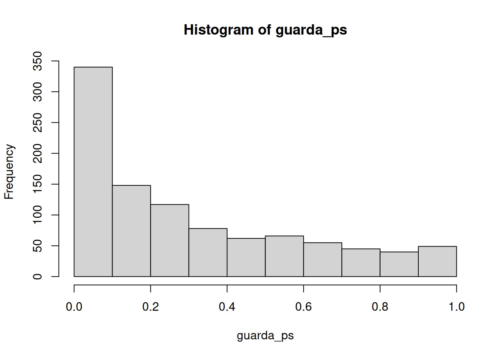
Ahora podés ver que la distribución de valores p está sesgada hacia la izquierda. Esto pasa porque cuando hay un efecto real, obtenés valores p menores a .05 más seguido. O sea, obtenés valores t mayores de lo que obtendrías si no hubiera diferencias.
En este caso, no estarías cometiendo un error tipo I si rechazás la nula cuando p es menor a .05. ¿Cuántas veces lo harías de las 1000 simulaciones?
length(guarda_ps[guarda_ps < .05])[1] 204length(guarda_ps[guarda_ps < .05]) / 1000[1] 0.204Obtuvimos 204 simulaciones donde p fue menor a .05, lo cual representa 0.204 experimentos. Si fueras el investigador, ¿te gustaría correr un experimento que solo tiene éxito 0.204 del tiempo? Yo no. Yo correría un experimento mejor.
¿Cómo harías una mejor simulación? Bueno, podés aumentar n, el número de sujetos. Aumentemos n de 10 a 100 y veamos qué pasa con la cantidad de experimentos “significativos”.
guarda_ps <- length(1000)
guarda_ts <- length(1000)
for (i in 1:1000) {
condicion_A <- rnorm(100, 10, 5)
condicion_B <- rnorm(100, 13, 5)
diferencias <- condicion_A - condicion_B
t_test <- t.test(diferencias, mu = 0)
guarda_ps[i] <- t_test$p.value
guarda_ts[i] <- t_test$statistic
}hist(guarda_ts)
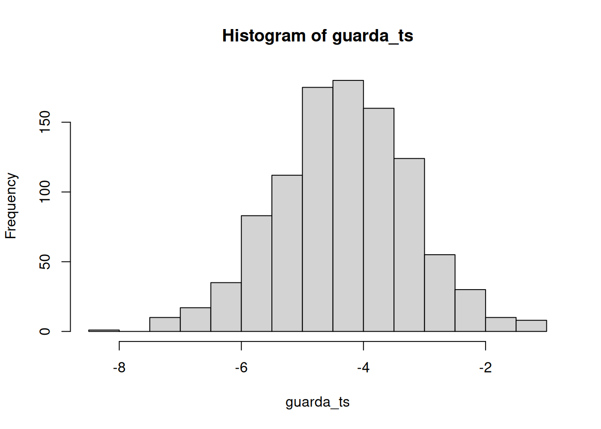
hist(guarda_ps)
length(guarda_ps[guarda_ps < .05])[1] 987length(guarda_ps[guarda_ps < .05]) / 1000[1] 0.987
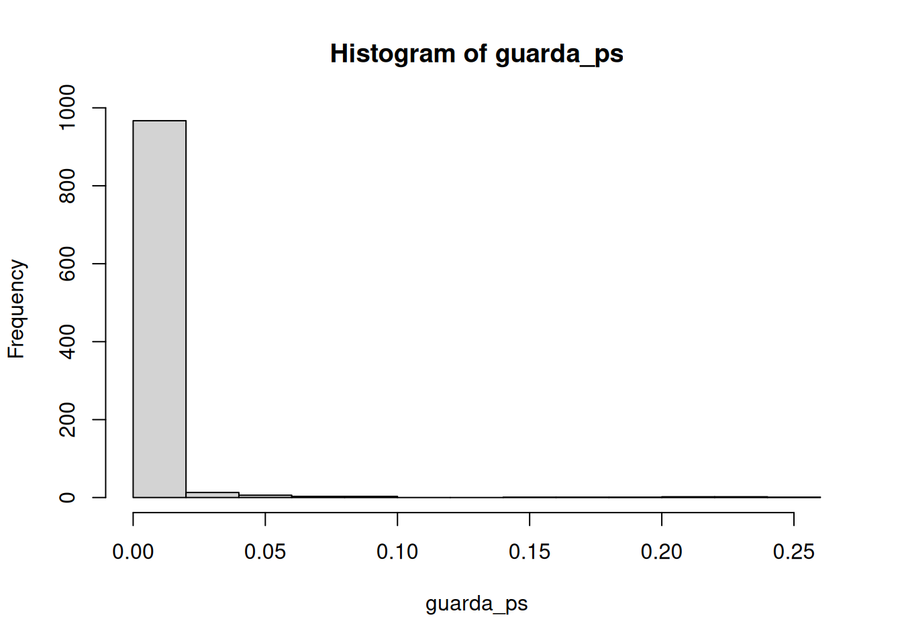
Genial, ahora casi todos los experimentos muestran un valor p menor a .05 (usando un test bilateral, que es la opción por defecto en R). ¿Ves? Podés usar este proceso de simulación para determinar cuántos sujetos necesitás para detectar confiablemente tu efecto.
6.5.3 Simular una prueba t de muestras independientes
Solo cambiá la función t.test de esta forma… esto es para simular bajo la nula, asumiendo que no hay diferencia entre los grupos.
guarda_ps <- length(1000)
guarda_ts <- length(1000)
for (i in 1:1000) {
group_A <- rnorm(10, 10, 5)
group_B <- rnorm(10, 10, 5)
t_test <- t.test(group_A, group_B, paired = FALSE, var.equal = TRUE)
guarda_ps[i] <- t_test$p.value
guarda_ts[i] <- t_test$statistic
}hist(guarda_ts)
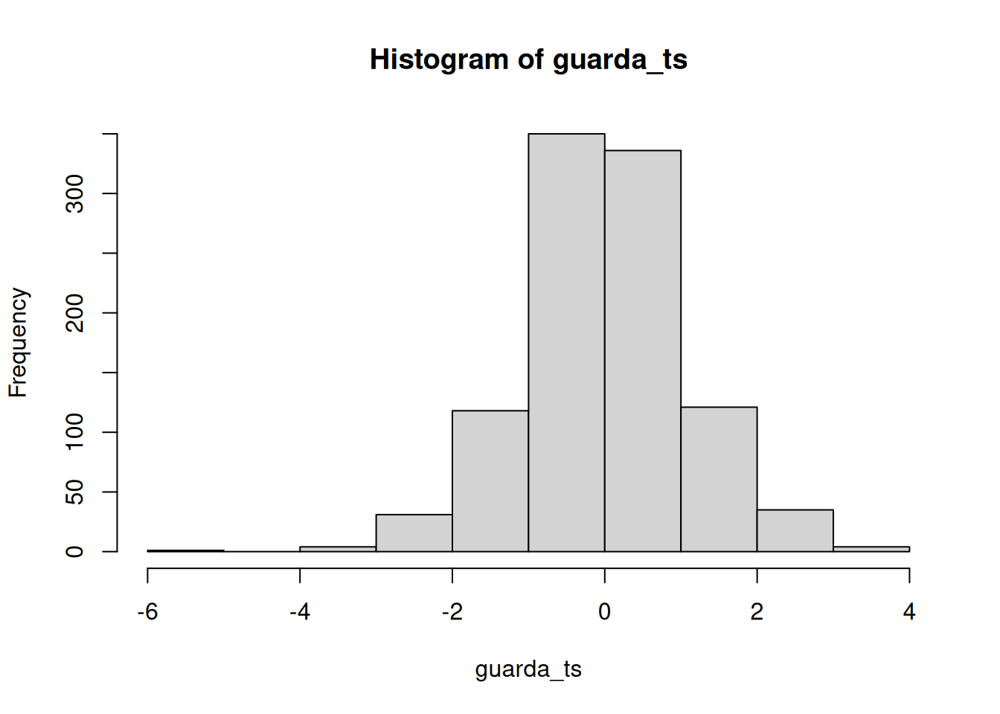
hist(guarda_ps)
length(guarda_ps[guarda_ps < .05])[1] 59length(guarda_ps[guarda_ps < .05]) / 1000[1] 0.059
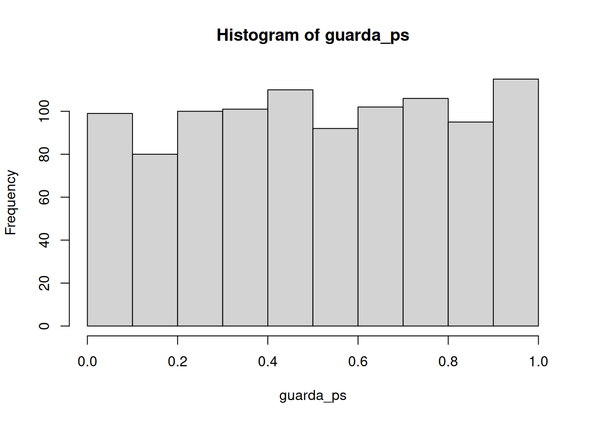